王様のガウン [梅吉]

寝起きの梅吉さん。
ブランケットがまるで王様のガウンの様！
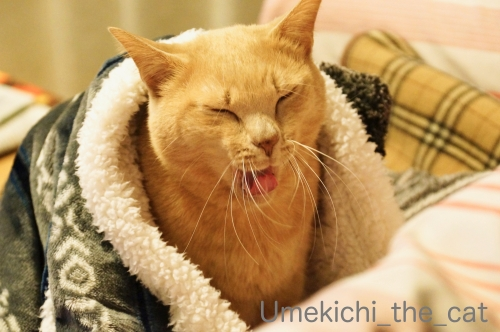
お口の周りが「もわっ」と盛り上がったと思ったら

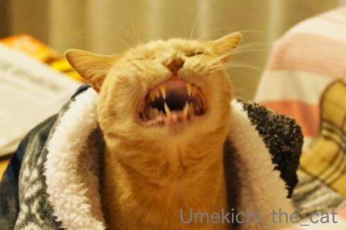

王様の豪快なあくびです。
キング・オブ・アクビー！？

この状態でしばしぼーっとしてましたw
梅吉はぷーすかいびきはかきますが寝言は聞いたことがありません。
先代猫はよく眠りながら「うにゃにゃにゃ・・・」って言っていたのですが。
みなさんのおうちの子、寝言言いますか？
それは、高いところだから？ [梅吉]
テンション高くキャットタワーに駆け上った梅吉さん。
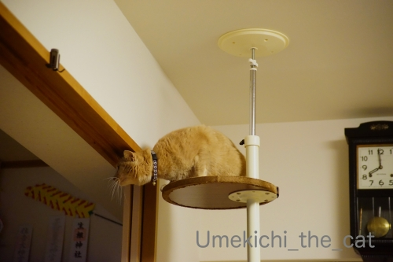
いつもは
![[猫]](https://blog.ss-blog.jp/_images_e/101.gif) マウント とったで
マウント とったで
と人間を見下ろすのですがこの日は様子が少々変です。
（23秒 環境音入ってます）
一体何がしたいんでしょうねぇ(⌒-⌒;
テンション高いから高いところで変なことしたくなるのか
高いところにいると気分が高揚して変なことしたくなるのかわかりませんが・・・
高い場所でこういう意味不明な行動の多い梅吉さんでしたw

りゆうは わしにも せつめいできひん（ｷﾘﾘｯ
梅吉は身軽だし運動神経も良いので高いところは平気。
が、万が一落下の可能性もあるので
下で座布団持ったおかーさんが待機していましたよ＾＾
＊＊＊＊＊＊＊＊＊＊＊＊＊＊＊＊＊＊＊＊＊＊＊＊＊＊＊＊＊＊＊＊＊＊
動画の終わり頃、突然勝手にズームが動いた(꒦ິ⌑꒦ີ)
デジイチでの動画は高画質撮影が出来ますが「勝手にズーム」になって困ります。
これって防げるの？？？
梅吉話題、今日はこの辺で！
 ↑ガブッと一押し↑
↑ガブッと一押し↑
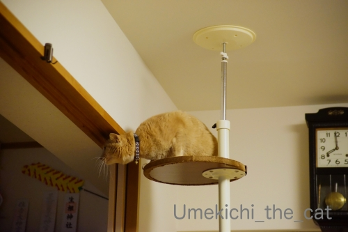
いつもは
と人間を見下ろすのですがこの日は様子が少々変です。
（23秒 環境音入ってます）
一体何がしたいんでしょうねぇ(⌒-⌒;
テンション高いから高いところで変なことしたくなるのか
高いところにいると気分が高揚して変なことしたくなるのかわかりませんが・・・
高い場所でこういう意味不明な行動の多い梅吉さんでしたw
梅吉は身軽だし運動神経も良いので高いところは平気。
が、万が一落下の可能性もあるので
下で座布団持ったおかーさんが待機していましたよ＾＾
＊＊＊＊＊＊＊＊＊＊＊＊＊＊＊＊＊＊＊＊＊＊＊＊＊＊＊＊＊＊＊＊＊＊
動画の終わり頃、突然勝手にズームが動いた(꒦ິ⌑꒦ີ)
デジイチでの動画は高画質撮影が出来ますが「勝手にズーム」になって困ります。
これって防げるの？？？
梅吉話題、今日はこの辺で！
定期診察とレボリューションのこと [梅吉]
先日土曜日に梅吉の定期診察に行ってきました。
【補足説明】
梅吉は高脂血症と診断されて日々のお薬と定期通院（血液検査＆腹部エコー）が必要です。
一歳くらいですでに中性脂肪値が高かったこと、体重を落としても中性脂肪値は高いまま、
の結果を考えると生活習慣病ではなく体質です。
今の所、日々の生活では快眠、快便、爆食欲、一日数回爆走ととても元気で
特に問題は見当たらないのでご心配なく(^_－)☆
お薬は治療と体質改善を兼ねてます。
これまでの経緯はダイエット関係の話 、
初めてお薬を処方された頃の話、
処方されたお薬の話で記事にしてます。
タグの『病院』もあるので興味のある方はそちらを見てね＾＾

この日は珍しくキャリーに入れるのに手こずりました。
逃げ回ったりはしないのですが
キャリーの縁に足をかけて踏ん張るので二人掛かりで押し込むw
この踏ん張る足がまた可愛いのですよ・・・・・( ´艸｀)
病院の待合ではドーンと構える梅吉さんwわんこにめんちきったりしてましたwww
で、診察台の上で静かにお怒りモードです。

先生来たっ！
診察の際には必ずお腹の触診をしてもらうのですが
わしの！
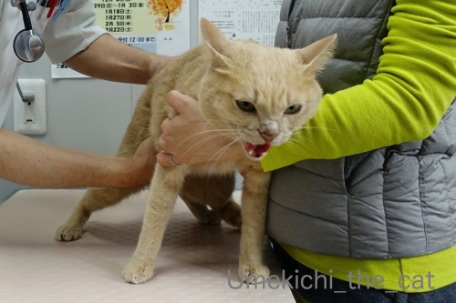
おなかを さわるとは！！

なにごとやっ！！！

シャーッッッッッッ！！！！！
とお怒りが爆発(⌒-⌒;
いつもこんな感じなので先生もスタッフの方も慣れたもので
「はいはいはいはいはいはい、堪忍やで〜（笑）」と診察が進んで行きますよ。

うー、わー、シャーシャー言っても暴れたりしないところが梅吉の良いところ。
採血のために別室に行く際は先生におとなしく抱っこされて行きます。

終わってスタッフの方に抱っこされて戻ってきました。
ありゃりゃ、この日は両足に針刺されちゃったね・・・・・

今回の採血結果。
前回から水薬（メトホルミン250 ）の濃度を濃くしたのですが
相変わらず中性脂肪の数値が芳しくありません。
先生ももう少し下がって欲しいなぁーと。
お薬の効きが今ひとつなのはなぜか？と調べるために甲状腺ホルモンの値も調べたのですが
こちらの数値もあまり良くない。
ホルモンの関係で中性脂肪値が下がらないことも考えられる、と。
後３ヶ月今のお薬を続けて改善がなければホルモンのお薬も試してみましょうとなりました。
う〜ん、梅吉のお薬の模索が続きます。

診察が終わってさっさとキャリーに入って「とっととかえるで」モードの梅吉さんw
レボリューションのハゲの件も相談してきました。
レボリューションを垂らしてから約６時間で脱毛、はちょっと早いかなぁと先生談。
２〜３日後に抜けることが多いようですよ。梅吉最短記録を更新！？
薬を点してから脱毛までの時間が短いので
今回の原因がレボリューションと言い切るにはちょっと疑問符。
もしかしたら他の可能性もあるのではないか？
毛が抜けた時に痒がったり痛がったり気にしている様子がなかったなら
とりあえずもう一回レボリューションを試してみましょうとなりました。
なぜ疑わしい薬をもう一度？と思われるかもしれませんが・・・
他の点薬を使っても皮膚への刺激は同じなので薬が原因の脱毛であれば他の薬でもきっとまたハゲる。
飲み薬もあるけれど、ノミ・マダニ忌避駆除薬とフィラリア対策用の飲み薬は別なので
２種の薬を飲ませなければいけない。
それは結構大変だよね。出来れば首の後ろにびしゃっと垂らして一回で終わりたいよね。
ならば今回のハゲは本当にレボリューションのせいなのか？を確認する方が良いかなぁ・・・
ということになったのです。
（もしレボリューションが原因じゃなければなぜ抜けたか、の疑問は残ってしまいますが）
この先寒い時期が続いてノミ・マダニ・蚊の活動が低下するので冬の間のレボリューションはお休み。
（この考え方には賛否ありますが今回の記事では触れません）
次回の診察は来年３月はじめなので、診察日の数日前にレボリューションをして
その結果も合わせて定期診察してもらう、ということになりました。
いろいろ持ち越しになってしまいましたが今年の病院はこれでおしまい。
梅吉のお怒りの「シャーーーーッッッッッッッ」も来春まで封印です(≧▽≦)
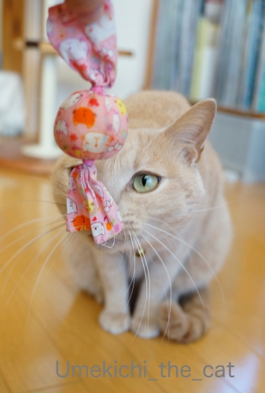
がんばった方にはまただび粉末絶賛増量キャンディのサービス！！
↑ガブッと一押し↑
【補足説明】
梅吉は高脂血症と診断されて日々のお薬と定期通院（血液検査＆腹部エコー）が必要です。
一歳くらいですでに中性脂肪値が高かったこと、体重を落としても中性脂肪値は高いまま、
の結果を考えると生活習慣病ではなく体質です。
今の所、日々の生活では快眠、快便、爆食欲、一日数回爆走ととても元気で
特に問題は見当たらないのでご心配なく(^_－)☆
お薬は治療と体質改善を兼ねてます。
これまでの経緯はダイエット関係の話 、
初めてお薬を処方された頃の話、
処方されたお薬の話で記事にしてます。
タグの『病院』もあるので興味のある方はそちらを見てね＾＾
この日は珍しくキャリーに入れるのに手こずりました。
逃げ回ったりはしないのですが
キャリーの縁に足をかけて踏ん張るので二人掛かりで押し込むw
この踏ん張る足がまた可愛いのですよ・・・・・( ´艸｀)
病院の待合ではドーンと構える梅吉さんwわんこにめんちきったりしてましたwww
で、診察台の上で静かにお怒りモードです。
先生来たっ！
診察の際には必ずお腹の触診をしてもらうのですが
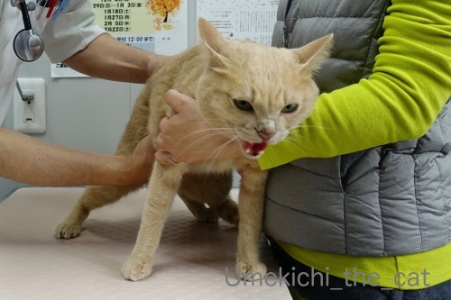
とお怒りが爆発(⌒-⌒;
いつもこんな感じなので先生もスタッフの方も慣れたもので
「はいはいはいはいはいはい、堪忍やで〜（笑）」と診察が進んで行きますよ。
うー、わー、シャーシャー言っても暴れたりしないところが梅吉の良いところ。
採血のために別室に行く際は先生におとなしく抱っこされて行きます。
終わってスタッフの方に抱っこされて戻ってきました。
ありゃりゃ、この日は両足に針刺されちゃったね・・・・・

今回の採血結果。
前回から水薬（メトホルミン250 ）の濃度を濃くしたのですが
相変わらず中性脂肪の数値が芳しくありません。
先生ももう少し下がって欲しいなぁーと。
お薬の効きが今ひとつなのはなぜか？と調べるために甲状腺ホルモンの値も調べたのですが
こちらの数値もあまり良くない。
ホルモンの関係で中性脂肪値が下がらないことも考えられる、と。
後３ヶ月今のお薬を続けて改善がなければホルモンのお薬も試してみましょうとなりました。
う〜ん、梅吉のお薬の模索が続きます。
診察が終わってさっさとキャリーに入って「とっととかえるで」モードの梅吉さんw
レボリューションのハゲの件も相談してきました。
レボリューションを垂らしてから約６時間で脱毛、はちょっと早いかなぁと先生談。
２〜３日後に抜けることが多いようですよ。梅吉最短記録を更新！？
薬を点してから脱毛までの時間が短いので
今回の原因がレボリューションと言い切るにはちょっと疑問符。
もしかしたら他の可能性もあるのではないか？
毛が抜けた時に痒がったり痛がったり気にしている様子がなかったなら
とりあえずもう一回レボリューションを試してみましょうとなりました。
なぜ疑わしい薬をもう一度？と思われるかもしれませんが・・・
他の点薬を使っても皮膚への刺激は同じなので薬が原因の脱毛であれば他の薬でもきっとまたハゲる。
飲み薬もあるけれど、ノミ・マダニ忌避駆除薬とフィラリア対策用の飲み薬は別なので
２種の薬を飲ませなければいけない。
それは結構大変だよね。出来れば首の後ろにびしゃっと垂らして一回で終わりたいよね。
ならば今回のハゲは本当にレボリューションのせいなのか？を確認する方が良いかなぁ・・・
ということになったのです。
（もしレボリューションが原因じゃなければなぜ抜けたか、の疑問は残ってしまいますが）
この先寒い時期が続いてノミ・マダニ・蚊の活動が低下するので冬の間のレボリューションはお休み。
（この考え方には賛否ありますが今回の記事では触れません）
次回の診察は来年３月はじめなので、診察日の数日前にレボリューションをして
その結果も合わせて定期診察してもらう、ということになりました。
いろいろ持ち越しになってしまいましたが今年の病院はこれでおしまい。
梅吉のお怒りの「シャーーーーッッッッッッッ」も来春まで封印です(≧▽≦)
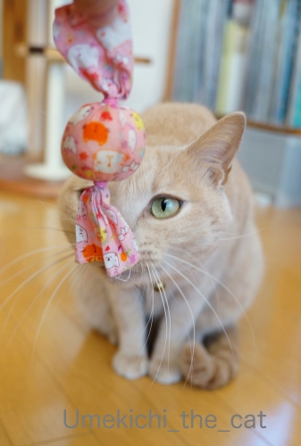
がんばった方にはまただび粉末絶賛増量キャンディのサービス！！
キメ顔は、国芳 [梅吉]
マタタビキャンディーをぺろぺろする梅吉さん。

顔が国芳の猫（妖怪っぽい）みたいになってます。
（国芳の猫って？の方はこちら）


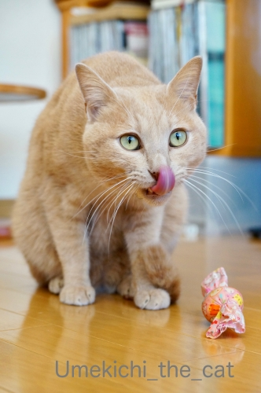

ながーく出る舌も妖怪っぽくw
ペロッと舌を出すのはペコちゃん始めキュートさの象徴みたいなものだと思うのですが・・・
梅吉らしい目つきの悪さで（Chatbleuさん談w 飼い主も100パーセント同意(*>艸<)
すごく国芳的です0(≧▽≦)0
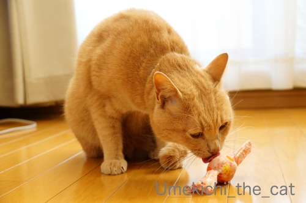
別の日のぺろぺろも
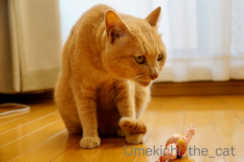
やっぱり最後は国芳的キメ顔なのでした。
真剣な時、楽しい時は怖い顔 or 妖怪顔している事が多い梅吉です。
もちろん飼い主はこの妖怪顔が大好物ですけど( ´艸｀)
逆に可愛い顔するのは悪いこと、やましいことをしている時！
見えないところでゴソゴソしているので様子を見に行くと
「きゅるるん！」とした目で見返してきますwww
にゃんこも「やましい」感情があるんだ、と思う瞬間。
↑ガブッと一押し↑
顔が国芳の猫（妖怪っぽい）みたいになってます。
（国芳の猫って？の方はこちら）
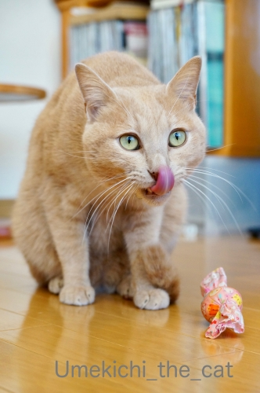
ながーく出る舌も妖怪っぽくw
ペロッと舌を出すのはペコちゃん始めキュートさの象徴みたいなものだと思うのですが・・・
梅吉らしい目つきの悪さで（Chatbleuさん談w 飼い主も100パーセント同意(*>艸<)
すごく国芳的です0(≧▽≦)0
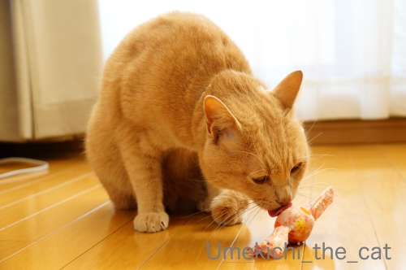
別の日のぺろぺろも
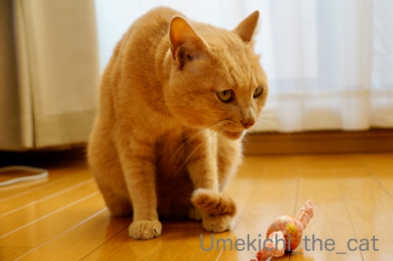
やっぱり最後は国芳的キメ顔なのでした。
真剣な時、楽しい時は怖い顔 or 妖怪顔している事が多い梅吉です。
もちろん飼い主はこの妖怪顔が大好物ですけど( ´艸｀)
逆に可愛い顔するのは悪いこと、やましいことをしている時！
見えないところでゴソゴソしているので様子を見に行くと
「きゅるるん！」とした目で見返してきますwww
にゃんこも「やましい」感情があるんだ、と思う瞬間。
動かない時がチャンス！ [梅吉]
週末にかけて寒かったですねー。
今シーズン初、手袋を使いました。
日中は家の中でもタイツ＆ヒートテック。
一番厚手の毛布も出して夜も完全冬仕様となりました。

寒くなると動きがなくなる猫。
猫って変温動物でしたっけ？(⌒-⌒;
例年通り湯たんぽを仕込んだベッドもホットカーペットも用意しておりますが
すっかりクリアボールに入り浸ってます。
にゃま首で甘えモードの梅吉さん。
甘えモードだとなぜか鼻筋が長くなるんです( ´艸｀)
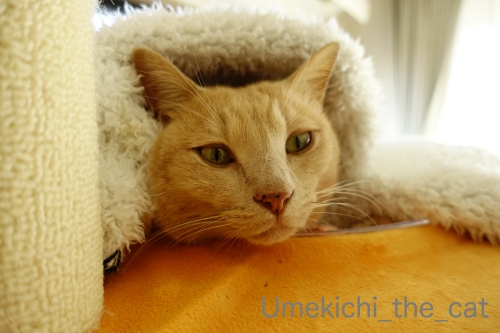
こんな感じで動かない時は大チャンス！！
それは・・・・・

被り物w
街はイルミネーションも始まってクリスマス一色ですからね。
梅吉さんもクリスマスっぽくいきましょうよ＾＾

わしで あそばんといてや
気温が低いと日中は本当に寝てばかりです。
その分人間が寝る頃になると元気になってきて・・・・
連日私がベッドに入ってからあちこちでガサガサしているので
気になって見に行くと物陰から飛びかかってきて追いかけっこに誘われます。
おかーさん、眠いし寒いんですけど(꒦ິ⌑꒦ີ)
↑ガブッと一押し↑
今シーズン初、手袋を使いました。
日中は家の中でもタイツ＆ヒートテック。
一番厚手の毛布も出して夜も完全冬仕様となりました。
寒くなると動きがなくなる猫。
猫って変温動物でしたっけ？(⌒-⌒;
例年通り湯たんぽを仕込んだベッドもホットカーペットも用意しておりますが
すっかりクリアボールに入り浸ってます。
にゃま首で甘えモードの梅吉さん。
甘えモードだとなぜか鼻筋が長くなるんです( ´艸｀)
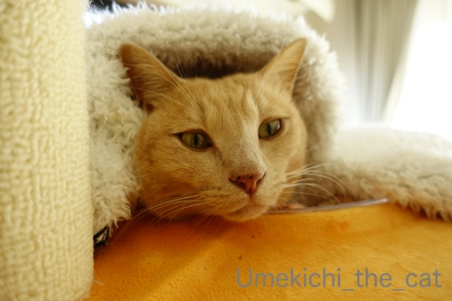
こんな感じで動かない時は大チャンス！！
それは・・・・・
被り物w
街はイルミネーションも始まってクリスマス一色ですからね。
梅吉さんもクリスマスっぽくいきましょうよ＾＾
気温が低いと日中は本当に寝てばかりです。
その分人間が寝る頃になると元気になってきて・・・・
連日私がベッドに入ってからあちこちでガサガサしているので
気になって見に行くと物陰から飛びかかってきて追いかけっこに誘われます。
おかーさん、眠いし寒いんですけど(꒦ິ⌑꒦ີ)
ここまで来ました！ [梅吉]

こんなみょーなアングル写真や
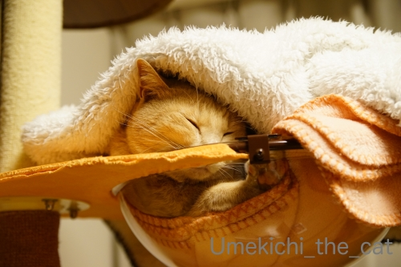
こんな姿も楽しいですが・・・・・

クリアボールの醍醐味はやっぱりこれですよねー0(≧▽≦)0
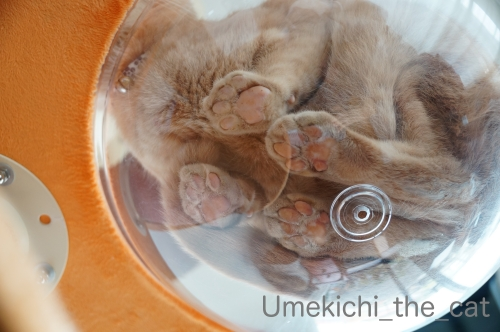
よっつの肉球がむぎゅむぎゅむぎゅむぎゅっと♡
先日掃除のためにブランケットを外しておいたら
みたいな感じでクリアボールに入ってました！
あまり抵抗がなくなってきた感じです。
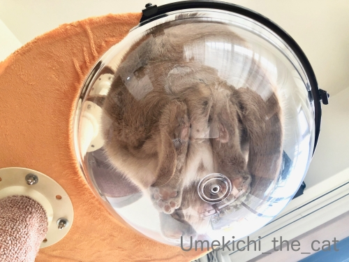
ああ、いろいろ押しつぶされているってなんて素敵ー！
猫変態の方はスマホで拡大して見てくださいねー。
ふふふふ(〃▽〃)
このまま寝るのかな？と思ったのですが数分後には落ち着かなげに出て行きましたけどw

ブランケットを敷くとこの通り。
やっぱりぬくぬくが心地よさげです＾＾
こんなふうに上からブランケットをかけるとボールの中にあったかい空気が溜まるのでしょうか。
時々ボールの内側が軽く結露してますw
自家発熱仕様？ヒートテックかっ！！
新嘗祭と紅葉狩り、は暑かった [梅吉]
我が家で収穫した稲を綺麗に掃除しようとしていたら・・・

神の御使、きたーーっ！

猫様が降臨されたので新嘗祭に変更です(≧▽≦)
軽く舞って
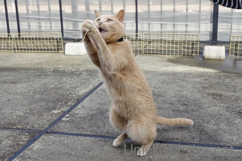
天に向かって祈る？
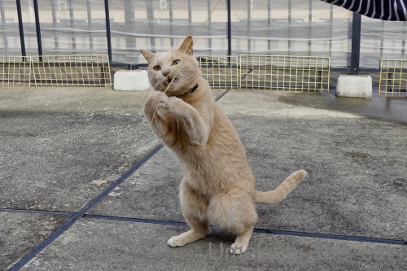
真剣に祈るとこういうお顔になるんでしょうかw
儀式の後は

むむっ！

空振りねこぱーんちっ！
儀式とお手伝い、お疲れ様でしたー。
↑ガブッと一押し↑
神の御使、きたーーっ！
猫様が降臨されたので新嘗祭に変更です(≧▽≦)
軽く舞って
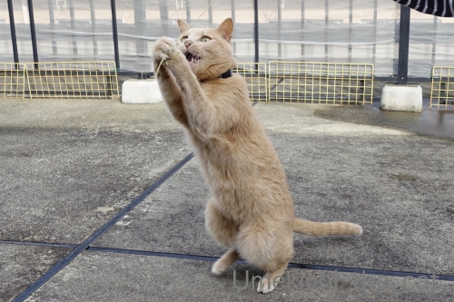
天に向かって祈る？
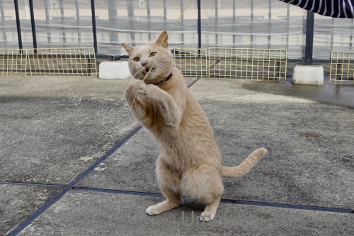
真剣に祈るとこういうお顔になるんでしょうかw
儀式の後は
空振りねこぱーんちっ！
儀式とお手伝い、お疲れ様でしたー。
おかーさんの変な歌と北海道の食べ物 [梅吉]

とつぜん冷たくなった白い恋人に戸惑う梅吉さん？
スイッチを入れてないとこうやってうずくまって
と私に圧をかけてくるんですよ(ｰ ｰ;)
我が家は窓が多いので割と寒いです。
パネルヒーターでは寒々しくて先日はついにエアコン暖房ON！
あったかいって素敵〜♪こうなるともう後戻りはできない・・・
お膝猫も毎日です。
お膝＆ちゅうちゅうは必ずではないですがお誘いすると来ていただけるんですよ＾＾
そのお誘いの方法とは？
（15秒 【警告】変な歌声？掛け声？入り）
おかーさんの「梅吉 ちゅうちゅうの歌」。
変な歌は気にしないでくださいなんて言えるレベルではないですw
なので音量オフにするか大音量でおかーさんの歌を楽しむか、どちらかでお願いしますね(*>艸<)
私が指差しているのはちゅうちゅうポイント＝梅吉が吸う決まった場所、です。
人間より数倍嗅覚が発達しているくせにこうやって教えてあげないと
なかなか場所を探せないんですよ・・・
どういうこっちゃ。
今日の梅吉話題はこの辺でー。
首元だけうっすら寒い！？ぬくぬく生活 [梅吉]
とある日も
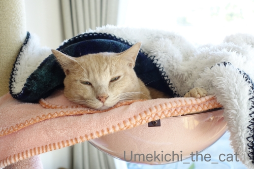
また、とある日も
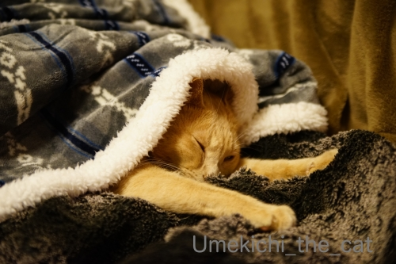
ぬくぬくしている梅吉さんですが

日差しのある日はベランダも楽しんでます。
コンクリートは冷たくなってきたのでくりんくるんは見られなくなりましたけど。
後ろに見えている四角い土と根のかたまりは稲穂を刈り取った後です。
稲穂？って？？
我が家は毎年プランターでお米作ってますw
今年の苗は住吉大社の御田植神事の後、使わずにあぜに残されてた苗を分けていただきました＾＾
二束ほど収穫した稲穂はただ今「はざ掛け」中。（吊るしてあるだけですけど）
脱穀して食べるくらいの量は収穫できませんが
お料理の飾りにしたり御正月飾りの一部にと使う予定です＾＾
で、土の塊は捨てやすい様に干しているところ。

我が家地方の冬の特徴、西からの冷たい風が吹き抜ける様になったので
梅吉さんのベランダ滞在時間は短いです。
手短にパトロールをしてささっと毛づくろいをしたらとっとと家に入って行きました(⌒-⌒;
その梅吉さんですが・・・・10月31日のこと。
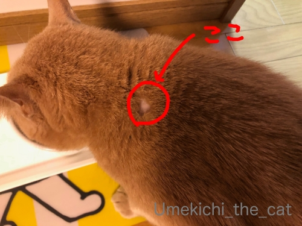
首〜肩のところがハゲになってしまいました(꒦ິ⌑꒦ີ)
梅吉は植物の多いベランダで遊ぶのが大好きなので
ノミダニ予防として毎月自分でレボリューションをしています。
レボリューション：簡単にいうと回虫駆除、ノミ・ダニの駆除、寄生予防剤で
舐められない位置、首〜方の辺りに数的垂らして使います。
お薬をさして数時間後に梅吉が首の後ろを掻いていたら大量の抜け毛がどばどばどばーっと！！
慌てて確かめるとレボリューションを垂らした付近の毛が抜けて皮膚が少しだけ赤くなっていました。
こうなったのは初めて。
レボリューションの注意書きを読んだりネットで調べるとよくある副作用とのこと。
脱毛とあわせて食欲不振、元気がなくなるなどの症状も現れるとのことでしたが
幸いにして元気で食欲も旺盛。
数日様子を見ていましたが脱毛が広がる様子もなく皮膚の赤みもすぐに引いたので
無理に病院に連れていくよりはと家で様子見することにしました。
体質の変化？その時の体調にもよるのでしょうか。
今まで大丈夫だったものが突然体に合わなくなること、人間でもありますものね。
皆様のおうちのにゃんこさん達は梅吉の様にベランダに出ることもなく
ダニ駆除剤の様なものはお使いではないと思いますが
もしお使いの方がいらっしゃったらお薬使用後は気をつけて様子を見てあげてくださいね。
突然こんなことが起きるかも。
12月初めに定期通院の予約が入っているので今回のことはその時に獣医さんに相談してみます。
ハゲになっちゃったところ、今はうっすら毛が生え始めていますよー。
↑ガブッと一押し↑
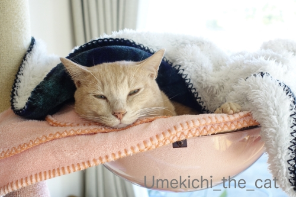
また、とある日も
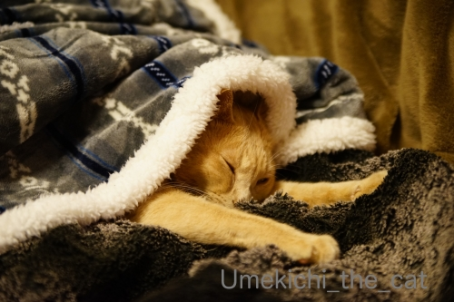
ぬくぬくしている梅吉さんですが
日差しのある日はベランダも楽しんでます。
コンクリートは冷たくなってきたのでくりんくるんは見られなくなりましたけど。
後ろに見えている四角い土と根のかたまりは稲穂を刈り取った後です。
稲穂？って？？
我が家は毎年プランターでお米作ってますw
今年の苗は住吉大社の御田植神事の後、使わずにあぜに残されてた苗を分けていただきました＾＾
二束ほど収穫した稲穂はただ今「はざ掛け」中。（吊るしてあるだけですけど）
脱穀して食べるくらいの量は収穫できませんが
お料理の飾りにしたり御正月飾りの一部にと使う予定です＾＾
で、土の塊は捨てやすい様に干しているところ。
我が家地方の冬の特徴、西からの冷たい風が吹き抜ける様になったので
梅吉さんのベランダ滞在時間は短いです。
手短にパトロールをしてささっと毛づくろいをしたらとっとと家に入って行きました(⌒-⌒;
その梅吉さんですが・・・・10月31日のこと。
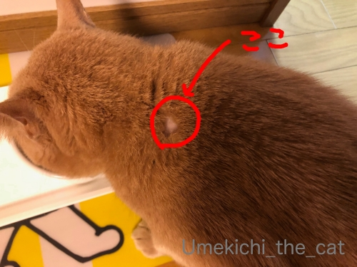
首〜肩のところがハゲになってしまいました(꒦ິ⌑꒦ີ)
梅吉は植物の多いベランダで遊ぶのが大好きなので
ノミダニ予防として毎月自分でレボリューションをしています。
レボリューション：簡単にいうと回虫駆除、ノミ・ダニの駆除、寄生予防剤で
舐められない位置、首〜方の辺りに数的垂らして使います。
お薬をさして数時間後に梅吉が首の後ろを掻いていたら大量の抜け毛がどばどばどばーっと！！
慌てて確かめるとレボリューションを垂らした付近の毛が抜けて皮膚が少しだけ赤くなっていました。
こうなったのは初めて。
レボリューションの注意書きを読んだりネットで調べるとよくある副作用とのこと。
脱毛とあわせて食欲不振、元気がなくなるなどの症状も現れるとのことでしたが
幸いにして元気で食欲も旺盛。
数日様子を見ていましたが脱毛が広がる様子もなく皮膚の赤みもすぐに引いたので
無理に病院に連れていくよりはと家で様子見することにしました。
体質の変化？その時の体調にもよるのでしょうか。
今まで大丈夫だったものが突然体に合わなくなること、人間でもありますものね。
皆様のおうちのにゃんこさん達は梅吉の様にベランダに出ることもなく
ダニ駆除剤の様なものはお使いではないと思いますが
もしお使いの方がいらっしゃったらお薬使用後は気をつけて様子を見てあげてくださいね。
突然こんなことが起きるかも。
12月初めに定期通院の予約が入っているので今回のことはその時に獣医さんに相談してみます。
ハゲになっちゃったところ、今はうっすら毛が生え始めていますよー。
出したり、引っ込めたり [梅吉]
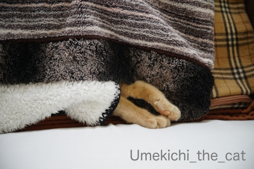
お昼寝中の梅吉さん。
チェックのカバーの中には湯たんぽが仕込んであります＾＾
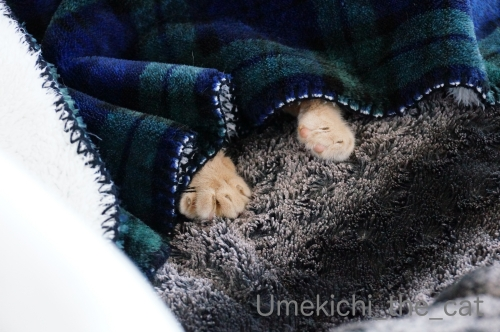
お手手だけチラ見せの日々。

お顔が出ている時もあります。
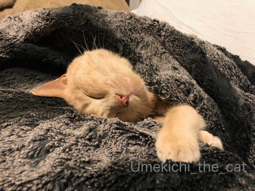
本気で寝ている時はこんな寝相(≧▽≦)
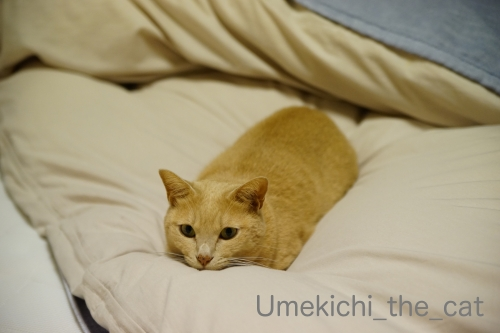
お手手を引っ込めるとナマコに変身！
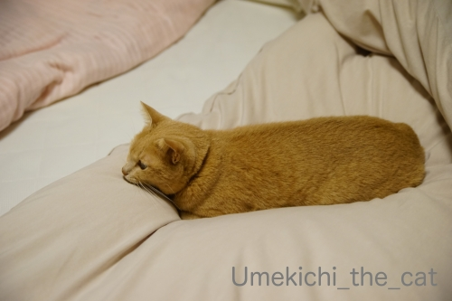
なまこたん♡
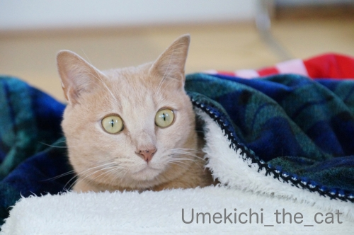
梅吉の発泡スチロールベッドに仕込んだホットカーペットの電源も入れました。
ぬくぬく入り浸りながらベランダ仕事をするおとーさんを凝視するの図。
あんなさむいとこにいてて しんじられへん
とでも言いたげな顔でしょうかw
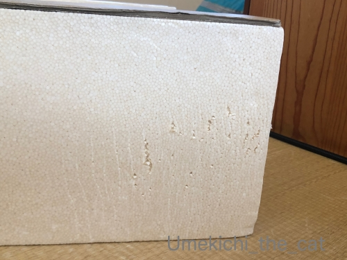
このベッド、作った当初は「梅吉は発泡スチロールには興味ない様です！」
なんて元気にコメントしておりましたが今ではご覧の様な有様で (^_^;)
しっかりと爪とぎにされております。
爪の引っかかり具合の良いものは見逃しませんねw
↑ガブッと一押し↑
お昼寝中の梅吉さん。
チェックのカバーの中には湯たんぽが仕込んであります＾＾
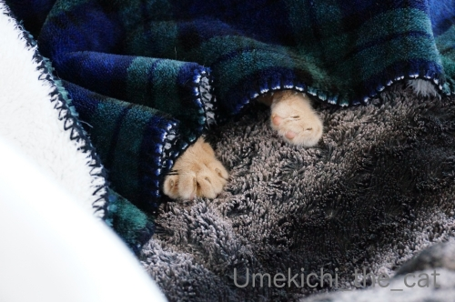
お手手だけチラ見せの日々。
お顔が出ている時もあります。
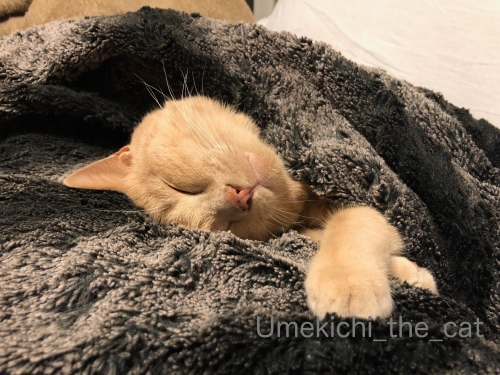
本気で寝ている時はこんな寝相(≧▽≦)
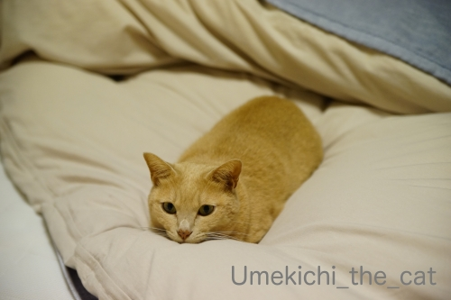
お手手を引っ込めるとナマコに変身！
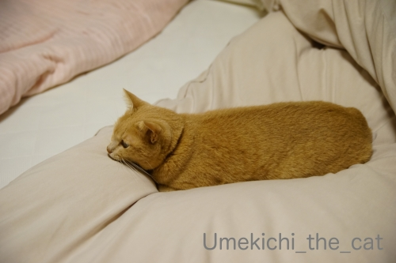
なまこたん♡
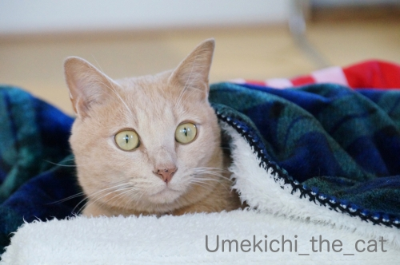
梅吉の発泡スチロールベッドに仕込んだホットカーペットの電源も入れました。
ぬくぬく入り浸りながらベランダ仕事をするおとーさんを凝視するの図。
とでも言いたげな顔でしょうかw
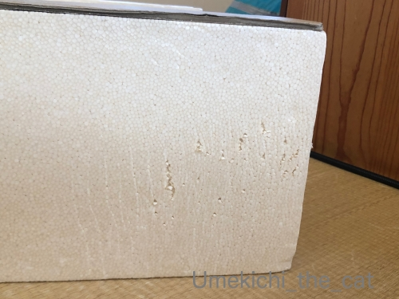
このベッド、作った当初は「梅吉は発泡スチロールには興味ない様です！」
なんて元気にコメントしておりましたが今ではご覧の様な有様で (^_^;)
しっかりと爪とぎにされております。
爪の引っかかり具合の良いものは見逃しませんねw

カフェオレ色の梅吉

梅吉 2023年8月10日 永眠


梅吉と出会った譲渡会

犬猫の理由なき殺処分ゼロ
妄想広告
UMEKICHI 光

爆発的に早い！
時々攻撃的！
Thanks to Mr.Boss365
爆発的に早い！
時々攻撃的！
Thanks to Mr.Boss365